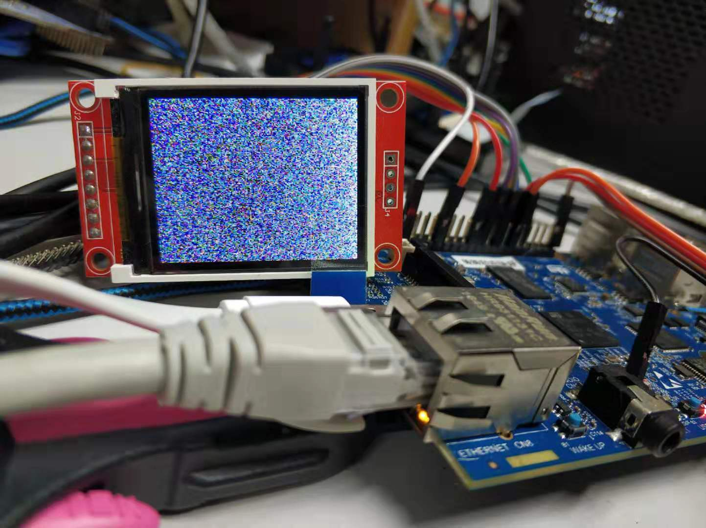

什么是fbtft
fbtft在github中的介绍是“ Linux Framebuffer drivers for small TFT LCD display modules，翻译过来就是支持小型TFT LCD显示器的Linux FrameBuffer驱动。也就是专门为小型TFT LCD所写的Framebuffer驱动。
github地址为：notro/fbtft
wiki地址为：notro/wiki
从fbtft的github上看，fbtft不在更新到github了，迁移到了Linux kernel staging tree。在https://git.kernel.org/pub/scm/linux/kernel/git/gregkh/staging.git/tree/drivers/staging/fbtft?h=staging-testing中看到fbtft所支持的设备有：
fbtft在STM32MP15X中
在STM32MP1X的4.19内核源码中，fbtft源码在内核根目录的：drivers\staging\fbtft。
如何使用
我手上有st7735r跟Ili9341的屏，看了下fbtft里面的源码正好有st7735r跟Ili9341驱动，先试下st7735r的屏，
在文件drivers\staging\fbtft\fb_st7735r.c中：
static struct fbtft_display display = {
.regwidth = 8,
.width = 128,
.height = 160,
.init_sequence = default_init_sequence,
.gamma_num = 2,
.gamma_len = 16,
.gamma = DEFAULT_GAMMA,
.fbtftops = {
.set_addr_win = set_addr_win,
.set_var = set_var,
.set_gamma = set_gamma,
},
};
FBTFT_REGISTER_DRIVER(DRVNAME, "sitronix,st7735r", &display);
FBTFT_REGISTER_DRIVER展开后如下：
#define FBTFT_REGISTER_DRIVER(_name, _compatible, _display) \
\
static int fbtft_driver_probe_spi(struct spi_device *spi) \
{ \
return fbtft_probe_common(_display, spi, NULL); \
} \
\
static int fbtft_driver_remove_spi(struct spi_device *spi) \
{ \
struct fb_info *info = spi_get_drvdata(spi); \
\
return fbtft_remove_common(&spi->dev, info); \
} \
\
static int fbtft_driver_probe_pdev(struct platform_device *pdev) \
{ \
return fbtft_probe_common(_display, NULL, pdev); \
} \
\
static int fbtft_driver_remove_pdev(struct platform_device *pdev) \
{ \
struct fb_info *info = platform_get_drvdata(pdev); \
\
return fbtft_remove_common(&pdev->dev, info); \
} \
\
static const struct of_device_id dt_ids[] = { \
{ .compatible = _compatible }, \
{}, \
}; \
\
MODULE_DEVICE_TABLE(of, dt_ids); \
有这么条语句：MODULE_DEVICE_TABLE(of, dt_ids); 。也就是说要使用该设备，需要修改设备树。
修改源码
首先在make menuconfig中把fbtft加上：
1、修改设备树
由于我的屏是接在STM32MP157c的SPI5，所以在设备树中spi5下面添加屏的设备数,CS脚接到STM32MP157C的GPIOF 6，DC脚接到GPIOF 3脚，RESET脚接到GPIOD 13，设备数修改为如下：
&spi5 {
pinctrl-names = "default", "sleep";
pinctrl-0 = <&spi5_pins_a>;
pinctrl-1 = <&spi5_sleep_pins_a>;
cs-gpios = <&gpiof 6 GPIO_ACTIVE_HIGH>;
status = "okay";
st7735r@0{
compatible = "jianda,jd-t18003-t01", "sitronix,st7735r";
reg = <0>;
spi-max-frequency = <32000000>;
dc-gpios = <&gpiof 3 GPIO_ACTIVE_HIGH>;
reset-gpios = <&gpiod 13 GPIO_ACTIVE_HIGH>;
rotation = <270>;
backlight = &backlight;
};
};
编译并把设备树跟内核更新到板子上，启动，看屏没什么反应，/dev下也没有fb设备，查看spi相关信息：
root@stm32mp1:~# dmesg | grep "spi"
[ 1.543185] spi_stm32 44009000.spi: 8 x 8-bit fifo size
[ 1.543206] spi_stm32 44009000.spi: 16-bit maximum data frame
[ 1.543670] spi_stm32 44009000.spi: registered master spi0
[ 1.543900] spi spi0.0: stm32_spi_setup: set gpio86 output high
[ 1.543943] spi spi0.0: setup mode 0, 8 bits/w, 32000000 Hz max --> 0
[ 1.544232] spi_stm32 44009000.spi: registered child spi0.0
[ 1.544245] spi_stm32 44009000.spi: driver initialized
[ 2.097755] fb_st7735r spi0.0: buswidth is not set
[ 2.102334] fb_st7735r: probe of spi0.0 failed with error -22
有错误，上网查了下资料，觉得可能是没有添加buswidth，在设备树种把buswitch加上：
&spi5 {
pinctrl-names = "default", "sleep";
pinctrl-0 = <&spi5_pins_a>;
pinctrl-1 = <&spi5_sleep_pins_a>;
cs-gpios = <&gpiof 6 GPIO_ACTIVE_HIGH>;
status = "okay";
st7735r@0{
compatible = "jianda,jd-t18003-t01", "sitronix,st7735r";
reg = <0>;
buswidth = <8>;
spi-max-frequency = <32000000>;
dc-gpios = <&gpiof 3 GPIO_ACTIVE_HIGH>;
reset-gpios = <&gpiod 13 GPIO_ACTIVE_HIGH>;
rotation = <270>;
backlight = &backlight;
};
};
重新更新板子上的设备树，上电，可以看到屏幕有白色变黑色，应该是可以了，在/dev下可以看到多了个fb设备:
测试
在屏上显示随机数：
cat /dev/urandom > /dev/fb0
